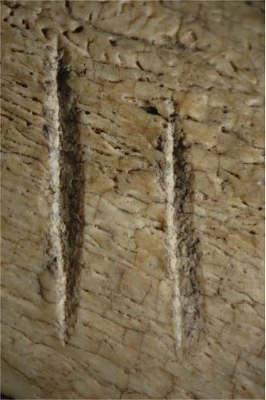

|
Seja bem vindo.
Hoje a cutelaria artesanal
propicia aos seus apreciadores um prazer que pode ser
comparado
àquele que é sentido ao se contemplar uma obra de arte,
apreciar um bom vinho ou fumar um Cohiba. Para
alguns pode
significar o mesmo que possuir um Breguet ou Rolex. Mas o
importante
é que a satisfação proporcionada por uma faca
artesanal é algo pessoal, apaixonante e, acima de tudo,
significa estar à frente na evolução da mais
antiga ferramenta humana.Ao lado está a imagem do mais antigo indício do uso de instrumentos de corte por nossos ancestrais, cerca de 3,4 milhões de anos atrás, o que é anterior ao uso controlado do fogo, ocorrido há pouco mais de 1 milhão de anos. |
 |
 |
|
|
|
|